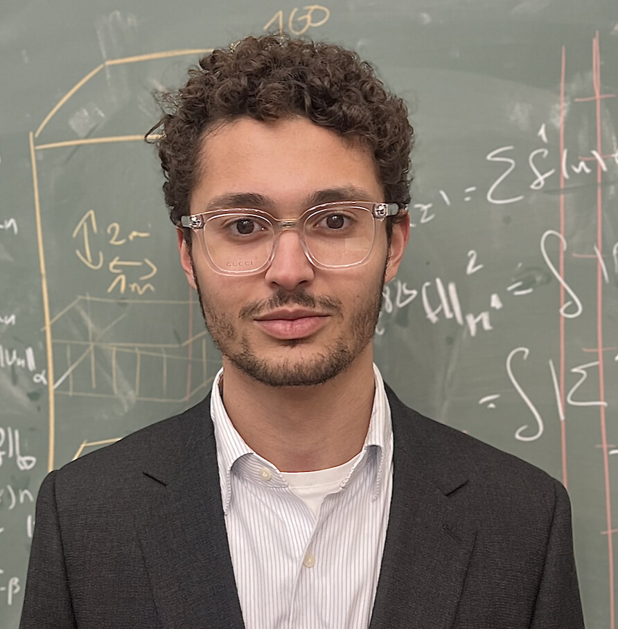

Accueil

Bienvenue sur ma page personnelle. J'utilise cet espace pour partager des papiers sur des sujets qui m'intéressent, les exercices donnés à mes élèves, ainsi que divers projets.
Je donne des cours particuliers de Mathématiques et de Physique du collège à la L3. N'hésitez pas à me contacter dans la perspective d'un travail commun.
Centres d'intérêt : Astronomie, Astrophysique, Cosmologie, Machine learning, l'Aléatoire, Comics, Pokemon (<4G).
Bonne visite.
CV
Vous pouvez accéder à mon Curriculum Vitae en cliquant ci-dessous :